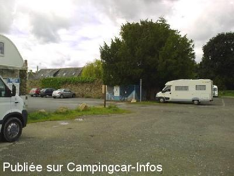
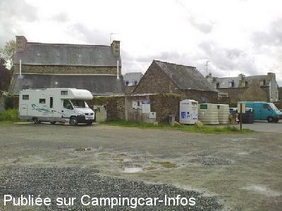
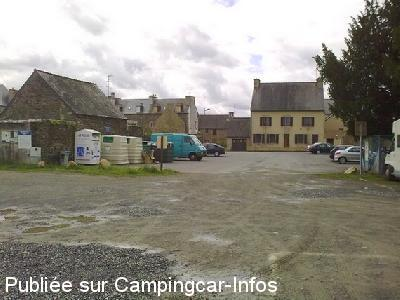
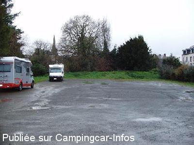
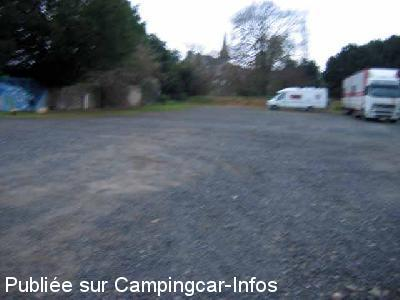

ASN = Aire de services avec stationnement nuit possible de :
LA ROCHE DERRIEN
(N° 755)
Accès/adresse :
1 Rue du Jouet
22450 LA ROCHE DERRIEN
22450 LA ROCHE DERRIEN
Latitude : (Nord) 48.7465° Décimaux ou 48° 44′ 47′′
Longitude : (Ouest) -3.25965° Décimaux ou -3° 15′ 34′′
Tarif : 2015
Stationnement,électricité : 4 €
Services : 2 €
Jetons mairie ou commerçants
Type de borne : Artisanale
Services :


Tous commerces
en face de l'aire
Tri sélectif
Autres informations :
Ouvert toute l'année
12 grands emplacements matérialisés
(8 m x 3,50 )
4 branchements électriques
Tél Mairie : +33 (0)296 913 631
http://www.larochederrien.com

Le 20/11/2011 par philr

Le 20/11/2011 par philr

Le 20/11/2011 par philr

Le 04/01/2010 par Milo

Le 28/12/2005 par Looping
de
BrunoM
le 12/08/2014 :
Avons passé une nuit sur cette aire.
Emplacements matérialisés au sol,très calme, en plein bourg.
Et bien sûr passage incontournable par la crêperie "Chez Chico" suite aux commentaires précédents !
Nous n'avons pas regretté, tout est excellent et l'acceuil est super !
Avons passé une nuit sur cette aire.
Emplacements matérialisés au sol,très calme, en plein bourg.
Et bien sûr passage incontournable par la crêperie "Chez Chico" suite aux commentaires précédents !
Nous n'avons pas regretté, tout est excellent et l'acceuil est super !
de
dede 02
le 07/06/2014 :
bonjour sommes actuellement sur cette aire, effectivement rien a dire,aire a proximite des commerces.Creperie chez Rico super rapport qualite prix,proprietaire tres sympa.Merci a la municipalite pour cette aire .Nous reviendrons.
bonjour sommes actuellement sur cette aire, effectivement rien a dire,aire a proximite des commerces.Creperie chez Rico super rapport qualite prix,proprietaire tres sympa.Merci a la municipalite pour cette aire .Nous reviendrons.
de
cricri
le 07/08/2013 :
petit village sympa avec une aire qui a le mérite d exister seul problème comme déjà dit vidanger les cassettes sur la grille d eau grise pas bien du tout mais 2e avec l électricité rien a dire et puis faite vous plaisir allez cher Rico petite creperie sur la place ou vous manger des moules frite et des crepes au caramel et au beurre salé hum que c est bon et les gens qui tienne c est établissement sont des gens merveilleux
petit village sympa avec une aire qui a le mérite d exister seul problème comme déjà dit vidanger les cassettes sur la grille d eau grise pas bien du tout mais 2e avec l électricité rien a dire et puis faite vous plaisir allez cher Rico petite creperie sur la place ou vous manger des moules frite et des crepes au caramel et au beurre salé hum que c est bon et les gens qui tienne c est établissement sont des gens merveilleux
de
Xtian74
le 03/05/2013 :
Passage le 3/05/2013. Une aire sympa et calme avec 12 grands emplacements délimités sur terre et graviers. Tarifs 2013 inchangés, savoir 2€ pour le stationnement, services 2€, électricité gratuite. Hotspot SFR !
Passage le 3/05/2013. Une aire sympa et calme avec 12 grands emplacements délimités sur terre et graviers. Tarifs 2013 inchangés, savoir 2€ pour le stationnement, services 2€, électricité gratuite. Hotspot SFR !
de
harel
le 08/01/2012 :
de passage le 7 janvier lair de la roche derrien é tres calme é en plus 2euro l electicité merci au maire de nous accuiellir car ancien camping cariste aussi.
de passage le 7 janvier lair de la roche derrien é tres calme é en plus 2euro l electicité merci au maire de nous accuiellir car ancien camping cariste aussi.
de
philr
le 20/11/2011 :
Bonjour. Qlqs photos lors de notre passage cet été 2011. 2€ la nuitée (pas cher) avec EdF SVP ;-) 2€ le jeton pour l'eau propre. Vidange sur grille E.U. au centre de la dalle béton. Hélas, containers apport déchets à l'entrée de l'aire (poubelles, verres, cartons, plastiques) disponible à toutes heures (malgré l'affiche de la Mairie 8h-20h). Village tjrs aussi beau. Très sympathique et instructive "Fête du lin". Malgré la pluie, nuits tranquilles.
Bonjour. Qlqs photos lors de notre passage cet été 2011. 2€ la nuitée (pas cher) avec EdF SVP ;-) 2€ le jeton pour l'eau propre. Vidange sur grille E.U. au centre de la dalle béton. Hélas, containers apport déchets à l'entrée de l'aire (poubelles, verres, cartons, plastiques) disponible à toutes heures (malgré l'affiche de la Mairie 8h-20h). Village tjrs aussi beau. Très sympathique et instructive "Fête du lin". Malgré la pluie, nuits tranquilles.
de
le viking
le 24/07/2011 :
Je passe au moins 3 fois par ans dans ce joli petit village ou nous sommes bien acceuillis pour 2€ la nuit que demander de plus avec le 220v ;bien des villes et villages devraient prendre exemple au lieu de nous égorger avec des tarifs prohibitifs ,je n'hésite pas à faire des achats et à remercier les commerçants pour leur acceuil
Je passe au moins 3 fois par ans dans ce joli petit village ou nous sommes bien acceuillis pour 2€ la nuit que demander de plus avec le 220v ;bien des villes et villages devraient prendre exemple au lieu de nous égorger avec des tarifs prohibitifs ,je n'hésite pas à faire des achats et à remercier les commerçants pour leur acceuil
de
philr
le 05/05/2011 :
Passages depuis 2004...
Je viens de retrouver l'article découpé cet été dans "Le Trégor". Nous avons connus cette aire en été 2004, suite à la visite du magnifique château et jardin non loin, gratuite mais sans EdF et plus "chaotique", avec parfois plus de 12 CC. Depuis, pour 2€ la nuitée (pas cher) avec EdF et 2€ le jeton pour l'eau propre, vous aurez toujours à votre disposition la vidange sur la grille E.U. au centre de la dalle béton, l'apport de déchets en face de l'aire (poubelles, verres, cartons, plastiques) disponible à toutes heures (malgré l'affiche de la Mairie 8h-20h). Un riverain a aussi placé un panneau "Camping-cars ne pas stationner devant ma haie" (de presque 3 m de haut). Les temps changent, quoique... ;-)
Passages depuis 2004...
Je viens de retrouver l'article découpé cet été dans "Le Trégor". Nous avons connus cette aire en été 2004, suite à la visite du magnifique château et jardin non loin, gratuite mais sans EdF et plus "chaotique", avec parfois plus de 12 CC. Depuis, pour 2€ la nuitée (pas cher) avec EdF et 2€ le jeton pour l'eau propre, vous aurez toujours à votre disposition la vidange sur la grille E.U. au centre de la dalle béton, l'apport de déchets en face de l'aire (poubelles, verres, cartons, plastiques) disponible à toutes heures (malgré l'affiche de la Mairie 8h-20h). Un riverain a aussi placé un panneau "Camping-cars ne pas stationner devant ma haie" (de presque 3 m de haut). Les temps changent, quoique... ;-)
de
gore denis
le 12/03/2011 :
situe en centre ville aire tres calme branchement electrique et stationnement 2 euros; illimitée quant le camping est fermé le 07 mars 2011 §
situe en centre ville aire tres calme branchement electrique et stationnement 2 euros; illimitée quant le camping est fermé le 07 mars 2011 §
de
Jean Yves Rannou
le 13/06/2010 :
De passage le week end de la Pentecôte, aire propre, tous les services fonctionnaient y compris 220v. Un adjoint au maire très sympathique est passé encaisser les services (2€, 220v compris). Aire très calme, invisible de la route et cerise sur le gâteau: sur la grande place il y a un restaurant "Chez Tonton": patron très sympa et bonne cuisine.
De passage le week end de la Pentecôte, aire propre, tous les services fonctionnaient y compris 220v. Un adjoint au maire très sympathique est passé encaisser les services (2€, 220v compris). Aire très calme, invisible de la route et cerise sur le gâteau: sur la grande place il y a un restaurant "Chez Tonton": patron très sympa et bonne cuisine.
de
Dougère Christian
le 21/08/2007 :
Nous y avons passé deux nuits en août. Aire très calme, proche du centre ville. Services et branchement électrique gratuits. Certes, un peu proche des conteneurs à déchets mais peu génants. Merci à la commune.
Nous y avons passé deux nuits en août. Aire très calme, proche du centre ville. Services et branchement électrique gratuits. Certes, un peu proche des conteneurs à déchets mais peu génants. Merci à la commune.
de
la_famille_escargot_36
le 04/03/2007 :
Propriétaire depuis peu de notre CC, nous revenons d'un petit périple de 8 jours dans l'ouest et avons utilisé certaines aires répertoriées. Concernant l'aire de services de La Roche Derrien, nous l'avons trouvé très sympathique, elle est retirée et au calme tout en étant très proche du centre bourg. Petit inconvénient, on nous invite à vider les eaux noires dans la grille de l'évacuation des eaux grises sans pouvoir soulever la grille : je vous laisse deviner la suite
Propriétaire depuis peu de notre CC, nous revenons d'un petit périple de 8 jours dans l'ouest et avons utilisé certaines aires répertoriées. Concernant l'aire de services de La Roche Derrien, nous l'avons trouvé très sympathique, elle est retirée et au calme tout en étant très proche du centre bourg. Petit inconvénient, on nous invite à vider les eaux noires dans la grille de l'évacuation des eaux grises sans pouvoir soulever la grille : je vous laisse deviner la suite